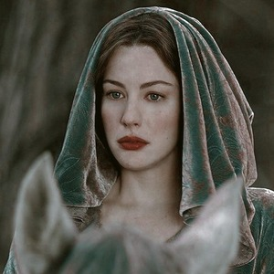
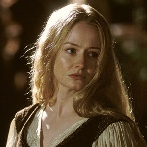

Known as the Lady of Lórien and the Lady of Light, Galadriel is considered
the mightiest and fairest of all the elves that remained in Middle-earth. She eventually sails to the Undying Lands.
In the films, she is portrayed by Cate Blanchett.

Arwen
Daughter and youngest child of Elrond, Arwen gives up her elvish immortality to remain with her
human husband Aragorn rather than travelling to the Undying Lands. In the films, she is portrayed by Liv Tyler.

Éowyn
A noblewoman and shieldmaiden of Rohan, Éowyn, alongside Merry Brandybuck, slays the Witch-King
of Angmar during the Battle of the Pelennor Fields. In the films, she is portrayed by Miranda Otto.